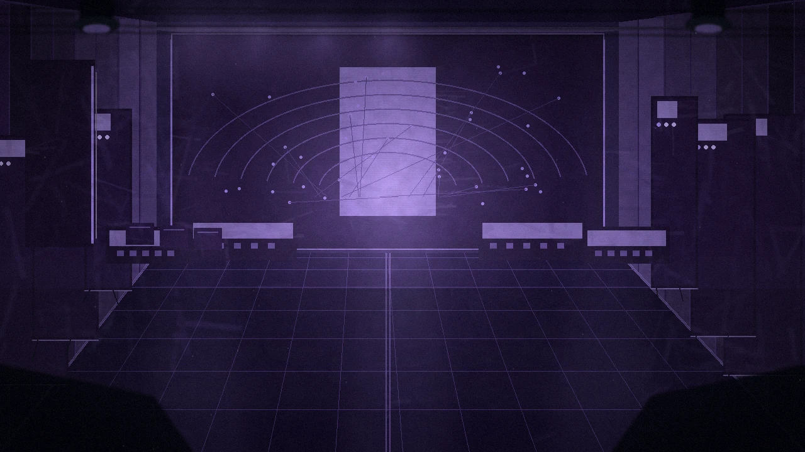

The world // screens from the game
The world,
in frames.
Every image on this page is from the game — campaign rooms, painterly environments, boss encounters, menus, the Evidence Workbench and all three endings. Click any image to view it full size.
Views
Choose a view.
All five chapters
The complete campaign
The complete campaign
64 screens shown
Context for the frames
Know what you are looking at.
The field manual explains the nine security disciplines of The Last Signal, the Evidence Workbench and every boss on these screens.